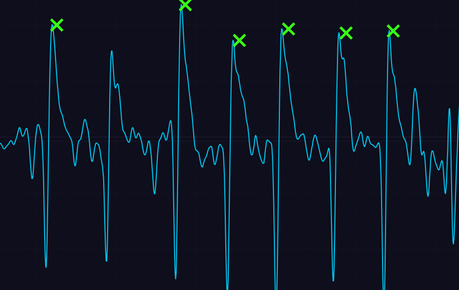
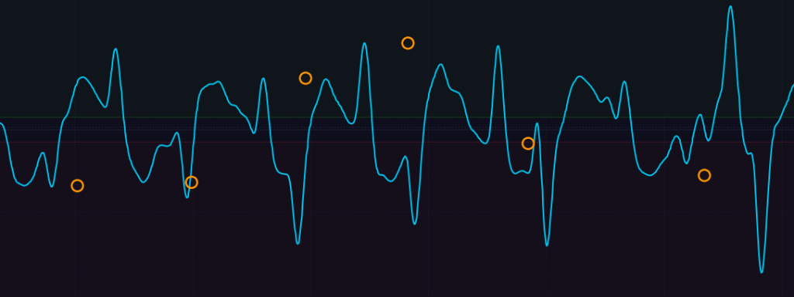

Eye-Controlled Car for Assistive Mobility
A hands-free robotic car steered entirely by eye movements and blinks, built for people with severe physical mobility challenges.
Why Drive a Car with Your Eyes?
People with severe paralysis often lose hand movement, but their eye muscles still function normally. This project translates tiny electrical signals from eye movements and blinks into real-time steering commands for a 4-wheel robot car.
What was I trying to achieve?
Safely steer a vehicle using only the eyes: intentional blinks toggle Start / Stop, while looking left or right steers. Emergency stops must execute immediately with zero lag.
Hardware Prototype
| Component | Part | Role |
|---|---|---|
| Microcontroller | Arduino Uno | Decodes eye commands and controls the wheel motors. |
| Motor Driver | Dual H-Bridge (L298N) | Drives 4 DC motors (Forward, Reverse, Left, Right, Stop). |
| Power | Li-ion Battery Pack | Dedicated motor power supply preventing resets. |
| Sensors | Biopotential Electrodes | Measures tiny eye voltage shifts and streams live data over COM3. |
Turning Eye Signals into Driving Commands

A deliberate blink creates a sharp electrical spike (green 'X' marks). When detected, it toggles the car between Moving and Stop.

Looking left produces a positive wave; looking right produces a negative wave (orange marks). The software reads wave direction to turn left or right.
Live Telemetry Interface (COM3)
Practical Engineering Solutions
Summary
Proves that low-cost biosensors and an Arduino microcontroller can provide reliable, hands-free mobility to people who cannot use manual controls.